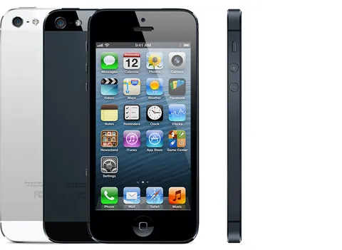
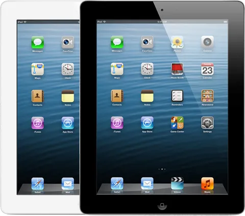
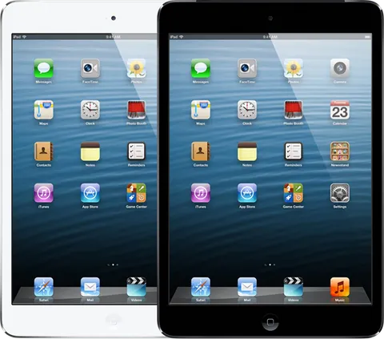
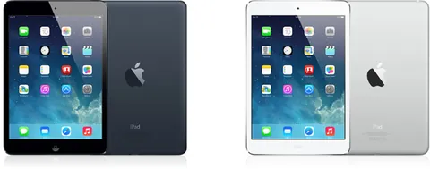
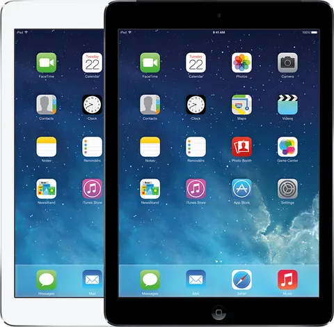

Target
I owned supply-chain strategy for Target’s Apple category. Target’s systems were set up for everyday goods such as shampoo; I changed how they stocked Apple products, store by store. I launched the 2012 rollout of the Apple shop-in-shop, and allocated the iPad mini launch to each store.
- Scale
- $700M+ a year, about 1,800 stores
- Results
- In-stock rate up 24%; market share up 3%
- Launch
- iPad mini, 2 November 2012

An Apple category, store by store
At Target, the US retailer, I owned supply-chain strategy for the Apple category: more than $700 million a year across about 1,800 stores.
It was one of the largest businesses at Target. The category held the iPads, iPods and accessories on Target’s shelves. Target’s retail systems were set up for everyday goods such as shampoo and toothpaste. My job was to change how they stocked Apple products, store by store. Target’s annual report counted shoppers’ view of its in-stock levels as a competitive factor.
iPhones at Target
iPhones sold at Target Mobile counters, which RadioShack ran until April 2013.

Apple shops inside Target stores
On 12 January 2012 Target confirmed a test of Apple shops inside 25 of its stores.
That month Target wrote to vendors about shoppers who examined products in its stores and bought online. On 2 May it said it would drop Amazon’s Kindle and keep the iPad. An analyst who visited one of the first two shops in May found most of Apple’s line and an employee trained on Apple products. I launched the rollout of the shop-in-shop in 2012. By August, Twin Cities Business reported, Target was testing Apple shops in about two dozen stores.

Direct to each store
I allocated Apple products direct to each store, outside the distribution centers that carried most of Target’s goods.
Allocation decided how many units each store received. A new product such as the iPad mini had no sales history, and once a store sold out, its sales stopped measuring demand.

How allocation software of the period worked
Allocation software of the period set each store’s need from sales history, a plan or a forecast. It subtracted the stock on hand and in transit, applied display minimums, and spread the available units by the need that remained.
The iPad mini, three weeks before Black Friday
I managed the most important allocation of Apple products at Target, around the iPad mini’s launch on 2 November 2012.
That was 21 days before Black Friday, which opens the US holiday shopping season. Fortune reported that white iPad mini pre-orders sold out in about 20 minutes. Apple later said it could not make enough of them in any week of the holiday quarter. The fight to allocate was intense. On launch day NBC News found about two-week ship times on retailers’ websites, Target’s included, so the units on each shelf were the units most shoppers could buy.

Black Friday 2013, then Apple at Target
On Black Friday 2013, receipt data from InfoScout, a shopper panel, put Apple products at about 22% of Target’s early sales.
Target’s three best-selling single items were all iPads, led by the iPad Air. I left Target in 2014 to join Amazon’s retail organization. In February 2021 Target introduced Apple at Target in 17 stores, with twice the space for Apple products. Target told CNBC that it had tested more prominent Apple displays nearly a decade earlier, and that the new shops went much further. Target said Apple at Target passed 150 stores in October 2022.
